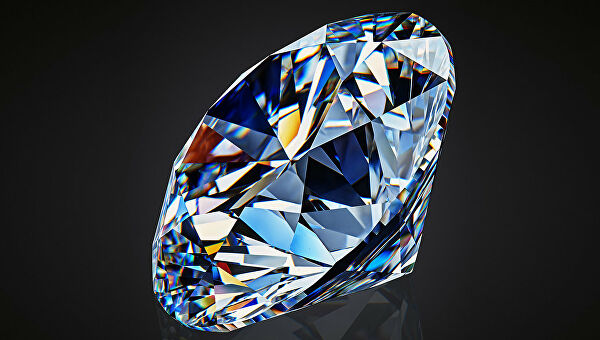

История магазина
Первые клиенты
Магазин не сразу начал приносить какой-либо доход. Многие годы команда работала в убыток, живя лишь надеждами и мачтами о том, что когда-то этот труд обернется успехом. Успешностью магазин обязан именно первым клиентам, которые рекомендовали наш магазин своим знакомым, таким образом и была сформирована сеть первых клиентов магазина «non nomen».Расширение
начало нового тысячелетия означало начало нового века для нашего магазина. 1-го января 2000-го года мы устроили самый масштабный на тот момент проект, получивший тогда название «saeculum», по расширению ассортимента товаров, который до этого проекта представлял из себя только относительно небольшой выбор часов.
Международная известность
1 января 2000 года можно считать фактическим днём рождения нашего магазина. Программа «saeculum» возымела ошеломительный успех. После неё было принято решение расширять сферы влияния нашего магазина за рамки только нашей страны. Уже 14-го января состоялась первая международная конференция, на которой мы представили первую коллекцию нашего собственного производства.Forbes
В 2003-м году наш магазин вошел в топ-5 ювелирных магазинов России по версии Forbes, а штат сотрудников достиг 5000 человек.
